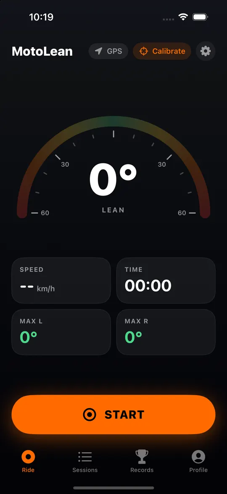

Recommended roads
Publish your favourite stretches with a rating and description, filter by twistiness and tap Take me there to open them in your navigator.
MotoLean measures your lean angle with the phone on your handlebars, records every ride and lets you relive it corner by corner.
For iPhone. The Android version is on its way.
Features
Mount the phone, calibrate in two seconds with the bike standing still, and ride. The app does the rest.

Ride
A big gauge shows your current lean and the maximum on each side, with speed, time and distance. Mount the phone any way you like: calibration measures how it sits.

Report
When you stop, the ride is saved and the report opens: route coloured by lean, heat map, every detected corner with its max lean, lean and speed charts.

Friends
With an account your rides are saved online. The feed shows your friends' rides, with 🔥 and comments; the leaderboard counts km, lean, corners and hours in the saddle.
And more
Publish your favourite stretches with a rating and description, filter by twistiness and tap Take me there to open them in your navigator.
After a hard impact followed by a stop, a countdown starts: if you don't answer, the app prepares a text and a call to your emergency contact.
Draw the finish line on the map and get lap times, ideal lap, three sectors and lean corner by corner.
Max lean, longest ride, most corners, all-time chicken strips and 13 badges to unlock.
Your bikes with per-bike stats and reminders for service, tyres and chain based on mileage.
Image cards to post, GPX files for Strava and Google Earth, JSON with the raw data.
Every ride starts visible only to you. You choose whether to show it to friends or to everyone.
Hides the part of your route near your home from others.
Data saved on the phone is encrypted, with the key in the device keychain.
No ads and no tracking. You can delete your account and data at any time.
Download
MotoLean is being tested by a group of riders. As soon as it is on the App Store and Google Play, the download links will be here.